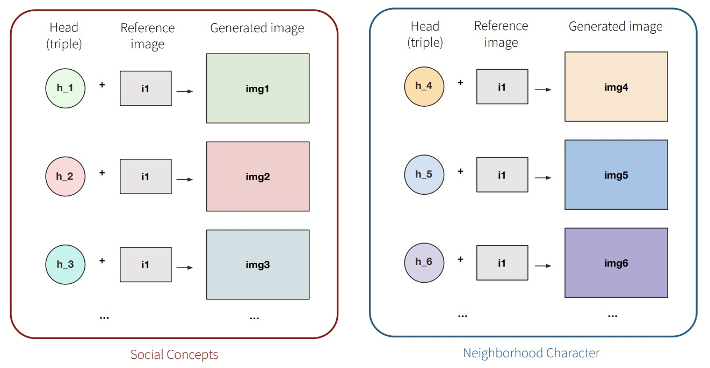
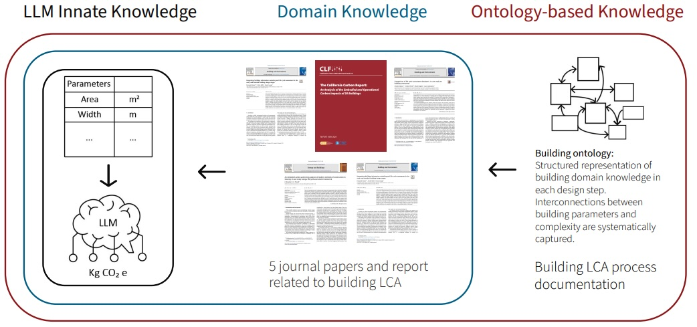
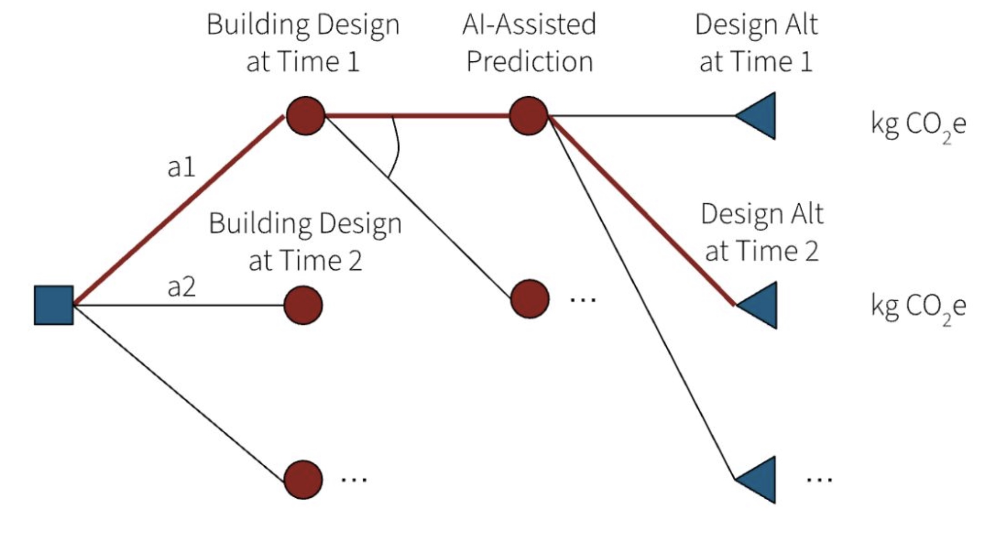

Hyeyun (Eunice) Jung, AIA
Stanford EERI Student Spotlight
BosNOMA Recognition Award
I am a licensed architect in Massachusetts and a PhD student at Stanford University in Civil and Environmental Engineering. Advised by Dr. Michael Lepech, I also collaborate closely with Dr. Jie Wang, Dr. Jackelyn Hwang, and Dr. Kincho Law. My doctoral research is supported by the Stanford Interdisciplinary Graduate Fellowship (SIGF) and the RAISE Doctoral Fellowship.
I worked for eight years in the architecture industry, specializing in complex facades and building systems for high-rise buildings after obtaining a Master of Architecture I from Harvard Graduate School of Design. This hands-on experience inspired me to tackle the industry's critical challenge of high embodied carbon. (Explore my architectural projects in the design section.)
At Stanford University, my research connects building design with urban sociology and Life Cycle Assessment, utilizing a data-driven Multimodal Large Language Model (MLLM) application. I aim to create an LLM-integrated framework, such as an AI agent, that empowers various stakeholders to collaborate via building image generation and integrate community, code, and carbon during critical early phases.
Research
-

The Urban Infill Paradox: Integrating Community, Code, and Carbon
Oral Presentation, Stanford Sustainability Data Science (SDS) Conference, 2026
Presentation -

Large Language Models Based In-Context Learning for Early Stage Building Life Cycle Assessment
Oral Presentation, Proceedings of the 59th Hawaii International Conference on System Sciences (HICSS-59), 2026
Paper | Presentation -

Application of Generative Artificial Intelligence for Early Stage Building Life Cycle Assessment
Lighting Talk & Poster Session, International Symposium on Sustainable Systems and Technology (ISSST), 2025